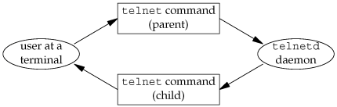
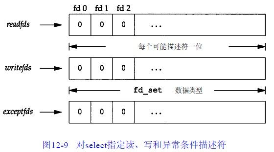
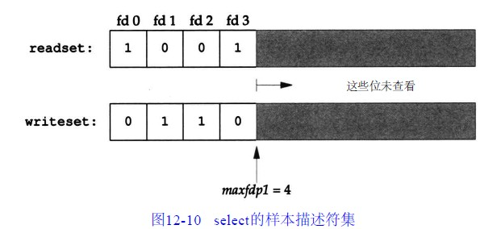
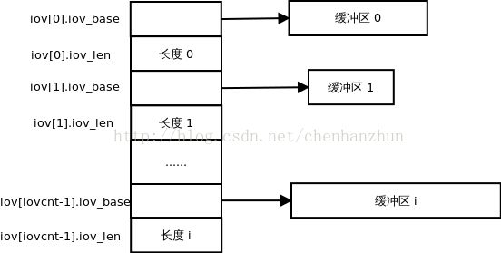
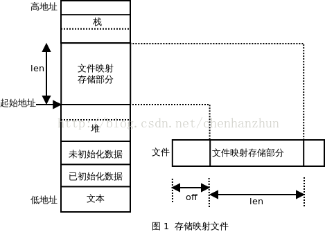
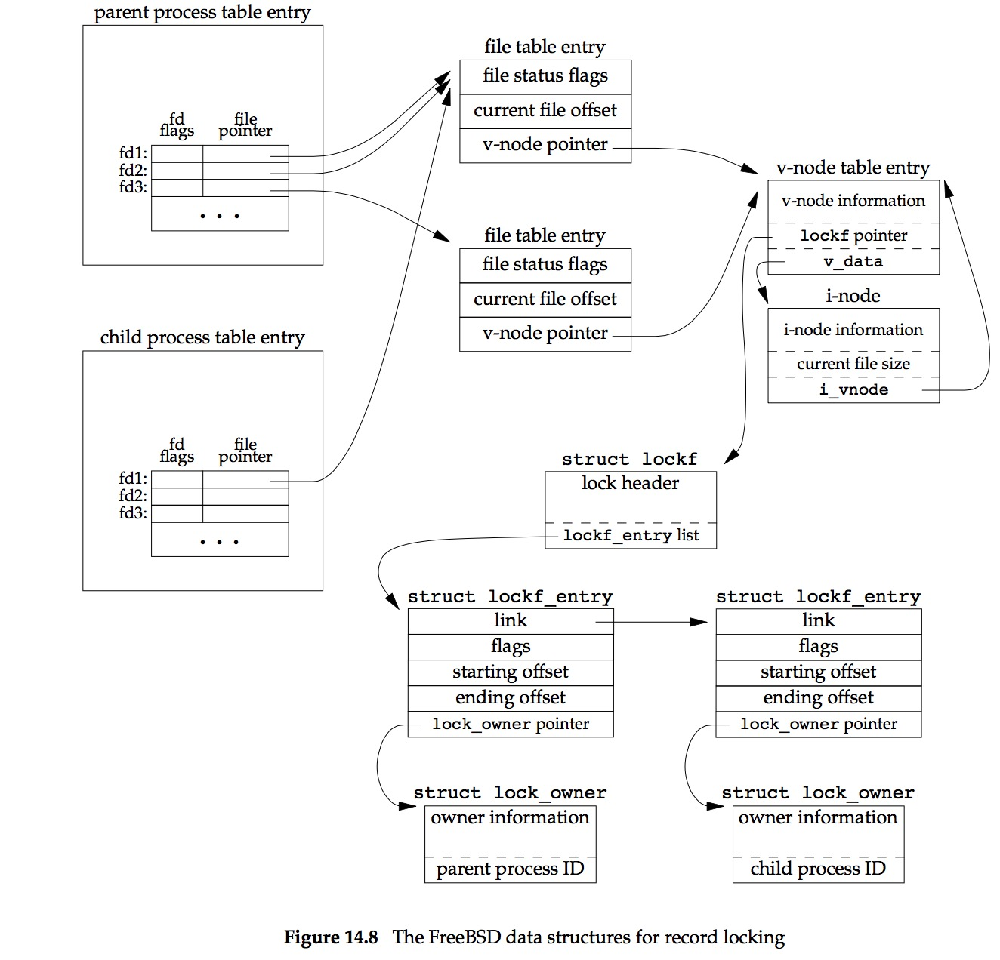
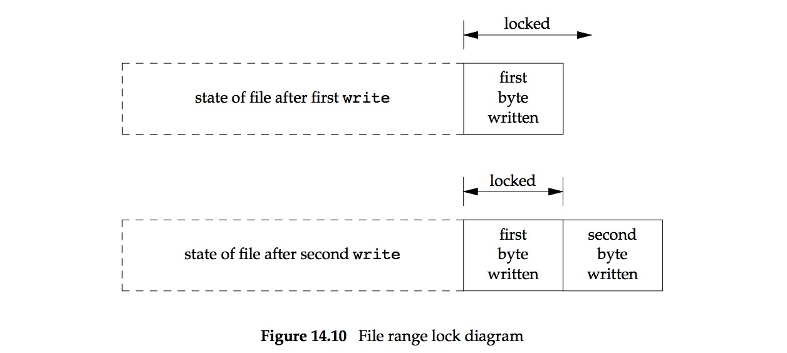

高级IO
本章内容包括：
- 非阻塞IO
- IO多路转接(select和poll函数)
- readv和writev函数
- 存储映照I/O(mmap)
- 记录锁
接下来的进程间通信(IPC)要使用这里所述的很多概念和函数
非阻塞IO
上一章曾将系统调用分成两类： 低速系统调用和其他
低速系统调用：可能会使进程永远阻塞的一类系统调用，比如读写未准备好的伪终端，网络，管道等
虽然读、写磁盘文件会使调用在短暂时间内阻塞，但并不能将它们视为“低速”
非阻塞 I/O：使调用 不会永远阻塞 的I/O操作
如果这种操作不能完成，则立即出错返回，表示该操作如继续执行将继续阻塞下去
对于一个给定的 描述符 有两种方法对其指定非阻塞I/O:
- 调用 open 以获得该描述符，则可指定 O_NONBLOCK 标志
- 已经打开 的一个描述符，则可调用 fcntl 打开 O_NONBLOCK 文件状态标志
对于一个非阻塞的文件描述符，如果没有数据可读写，则read和write将直接返回-1，并设置errno为EAGAIN
轮询
下面程序从 标准输入 读 100000 字节，并试图将它们写到 标准输出 上：
- 将 标准输出 设置为 非阻塞 的
- 用 轮询 进行输出
每次写的结果都在 标准出错 上打印
#include <errno.h> #include <fcntl.h> #include "apue.h" char buf[100000]; int main(void) { int ntowrite, nwrite; char *ptr; ntowrite = read(STDIN_FILENO, buf, sizeof(buf)); fprintf(stderr, "read %d bytes\n", ntowrite); set_fl(STDOUT_FILENO, O_NONBLOCK); /* set nonblocking */ ptr = buf; while (ntowrite > 0) { errno = 0; nwrite = write(STDOUT_FILENO, ptr, ntowrite); fprintf(stderr, "nwrite = %d, errno = %d\n", nwrite, errno); if (nwrite > 0) { ptr += nwrite; ntowrite -= nwrite; } } clr_fl(STDOUT_FILENO, O_NONBLOCK); /* clear nonblocking */ exit(0); }
在linux上的测试结果显示并没有如想象中的调用多次非阻塞写操作，而是只有一次写操作
虽然关于非阻塞IO内容可能已经过时，但是程序中出现的轮询却还一直被用在各种非阻塞操作中
轮询往往会导致”浪费CPU时间“，一种更加有效的方法是使用“非阻塞描述符”的”I/O多路转接“
流机制
除了SVR4及其后代如Solaris之外流机制并不是很常用，现在更多被使用的是BSD的socket机制
I/O多路转接
当从一个描述符读，然后又写到另一个描述符时，可以在下列形式的循环中使用阻塞I/O：
while ( (n = read(STDIN_FILENO, buf, BUFSIZ)) > 0 ) if( write(STDOUT_FILENO, buf, n) != n) err_sys("write error");
这种形式的阻塞I/O到处可见，但是如果必须读两个描述符又将如何呢？
如果仍旧使用阻塞I/O，那么就可能长时间阻塞在一个描述符上，而另一个描述符虽有很多数据却不能得到及时处理
所以为了处理这种情况显然需要另一种不同的技术
观察下面的工作情况：
- telent 程序 读 终端 (标准输入)
- 所得数据 写 到 telnetd 上
- 读 telentd
所得数据 写 到 终端上 (标准输出)
读和写各使用一个进程
处理这种特殊问题的一种方法是 设置两个进程 ，每个进程处理一条数据通路。图12-2中显示了这种安排：

如果使用两个进程，则可使每个进程都执行阻塞read 但是也产生了这两个进程间相互配合问题： 1. 如果子进程接收到文件结束符(由于电话线的一端已经挂断，使调制解调器也挂断)，那么该子进程终止，然后父进程接收到SIGCHLD信号 2. 若父进程终止(用户在终端上键入了文件结束符)，那么父进程应通知子进程停止工作。为此可以使用一个信号(例如SIGUSR1) 这使程序变得更加复杂
使用非阻塞IO
另一个方式是仍旧 使用一个进程 执行该程序，但调用 非阻塞I/O 读取数据，其基本思想是：
- 将 两个输入描述符 都设置为 非阻塞 的
- 对第一个描述符发一个 read
- 如果该输入上有数据，则读数据并处理它
- 如果无数据可读，则read立即返回
- 对第二个描述符发一个 read 并作用样的处理
- 对第一个描述符发一个 read
- 在此之后， 等待 若干秒 再读 第一个描述符
这种方法的不足之处是浪费CPU时间： 1. 大多数时间实际上是无数据可读，但是仍不断反复执行read，这浪费了CPU时间 2. 在每次循环后要等多长时间再执行下一轮循环也很难确定 轮询技术在支持非阻塞I/O的系统上都可使用，但是在多任务系统中应当避免使用
多路转接
一种比较好的技术是使用“I/O多路转接”，其基本思想是： 1. 构造一张有关描述符的表 2. 调用一个函数，它要到这些描述符中的一个已准备好进行I/O时才返回 3. 返回时它告诉进程哪一个描述符已准备好可以进行I/O
select函数
select函数可以在SVR4和4.3+BSD之下可以执行I/O多路转接
调用者传向select的 参数 告诉内核:
- 所 关心的描述符
- 对于每个描述符所 关心的条件 ：
- 是否 读 一个给定的描述符
- 是否想 写 一个给定的描述符
- 是否关心一个描述符的 异常条件
- ……
- 希望 等待多长时间 ：
- 永远等待
- 等待一个固定量时间
- 完全不等待
一个描述符阻塞与否并不影响select是否阻塞，也就是说如果希望读一个非阻塞描述符，并且以超时值为5秒调用select，则select最多阻塞5秒
相类似如果指定一个无限的超时值，则select阻塞到对该描述符数据准备好，或捕捉到一个信号
#include <sys/select.h> /** * 使用select函数进行IO多路转接 * * maxfdp1: readfds, writefds, exceptfds三个描述符中大的fd值加1 * readfds: 指向读文件描述符集的指针 * writefds: 指向写文件描述符集的指针 * exceptfds: 指向异常文件描述符集的指针 * tvptr: 指向等待时间结构的指针 * * return: 准备就绪的描述符数量，若超时则为 0，若出错则为 -1 * */ int select(int maxfdp1, fd_set *readfds, fd_set *write_fds, fd_set *exceptfds, struct timeval *tvptr);
从select 返回 时，内核告诉调用者：
- 已 准备好的描述符 的 数量
- 哪一个描述符 已准备好 读 、 写 或 异常 条件
使用这种返回值，就可 调用 相应的I/O函数(一般是 read 或 write )，并且 确知该函数不会阻塞
fd_set数据类型
指向 描述符集 的指针：
- readfds ：关心的 可读的各个描述符
- writefds ：关心的 可写描述符号
- exceptfds ：关心的处于 异常条件的各个描述符
每个描述符集存放在一个 fd_set 数据类型中，这种数据类型的实现可见图12-9，它为 每一可能的描述符保持了一位 ：

操作fd_set这种类型的变量使用下列四个 宏 ：
int FD_ISSET(int fd, fd_set *set); // 测试某文件描述符对应的位是否被设置 void FD_SET(int fd, fd_set *set); // 设置某文件描述符对应的位 void FD_CLR(int fd, fd_set *set); // 清除某文件描述符对应的位 void FD_ZERO(fd_set *set); //清除其所有位
select中间三个参数中的任意一个(或全部)可以是 空指针 ，这表示对 相应条件并不关心
如果所有三个指针都是空指针，则select提供了较sleep更精确的计时器
maxfdp1参数
第一个参数maxfdp1的意思是 最大fd加1 ，在三个描述符集中找出最高描述符编号值，然后加1
可将第一个参数设置为FD_SETSIZE，它说明了最大的描述符数(经常是256或1024)
但是对大多数应用程序而言此值太大了，大多数应用程序只使用3~10个描述符
如果将第三个参数设置为最高描述符编号值加1，内核就只需在此范围内寻找打开的位，而不必在数百位的大范围内搜索
fd_set readset, writeset; FD_ZERO(&readset); FD_ZERO(&writeset); FD_SET(0, &readset); FD_SET(3, &readset); FD_SET(1, &writeset); FD_SET(2, &writeset); select(4, &readset, &writeset, NULL, NULL);
图12-10显示了这两个描述符集的情况：

因为描述符编号从0开始，所以要在最大描述符编号值上加1，实际上是“要检查的描述符数量”
timeval结构
最后一个参数 tvptr 是一个指向 timeval 结构的指针，它指定 愿意等待的时间 ：
struct timeval{ long tv_sec; /* seconds */ long tv_usec; /* and microseconds */ };
有以下三种情况：
- tvptr = NULL : 永远 等待
当所指定的“描述符中的一个已准备好”或“捕捉到一个信号“则返回，否则无限期等待
- tvptr->tv_sec = 0 && tvptr->tv_usec = 0 : 完全 不等待
测试所有指定的描述符并立即返回
这是得到多个描述符的状态而不阻塞select函数的轮询方法
- tvptr->tv_sec !=0 || tvptr->tv_usec != 0 : 等待 指定的 秒数 和 微秒数
当指定的描述符之一已准备好，或当“指定的时间值已经超过”时立即返回
与第一种情况一样，等待可被捕捉到的信号中断
返回值
select有三个可能的返回值：
- -1 ： 出错
- 在所指定的描述符都没有准备好时 捕捉到一个信号 ，并且errno设置为EINTR
- 0： 超时
- 没有描述符准备好 ，而且 指定的时间已经超过
- >0：已经 准备好的描述符数
- 三个描述符集 中 仍旧打开的位 是对应于 已准备好的描述符位
对于 准备好 的意思要作一些更具体的说明：
- 若对 读集 中的 一个描述符的read不会阻塞 ，则此描述符是准备好的
- 若对 写集 中的 一个描述符的write不会阻塞 ，则此描述符是准备好的
- 若对异常条件集中的一个描述符有一个 未决异常条件 ，则此描述符是准备好的
- 在 网络连接 上到达 指定波特率外 的数据
- 在处于数据包方式的 伪终端 上发生了 某些条件
如果在一个描述符上碰到了文件结束，则select认为该描述符是可读的，
然后调用read，它返回0，这是UNIX指示到达文件结尾处的方法
很多人错误地认为，当到达文件结尾处时，select会指示一个异常条件
pselect函数
pselect 函数是select的变体：
#include <sys/select.h> int pselect(int nfds, fd_set *readfds, fd_set *writefds, fd_set *exceptfds, const struct timespec *timeout, const sigset_t *sigmask);
主要区别：
- 定时采用了 纳秒级 的timespec结构
- timespec参数声明为 const
- 使用 信号集 屏蔽 不需要的信号
poll函数
SVR4的poll函数类似于select，但是其调用形式则有所不同
#include <poll.h> /** */ int poll(struct pollfd *fds, nfds_t nfds, int timeout);
pollfd结构
与select不同，poll不是为每个条件构造一个描述符集，而是构造一个 pollfd结构数组 ，每个数组元素指定 一个描述符编号 以及对其所 关心的条件 ：
struct pollfd { int fd; /* 文件描述符号或<0表示忽略*/ short events; /* 关心的事件,由用户程序设置 */ short revents; /* 已经发生的事件,由系统设置 */ }
- events 成员应该被设置为下表中所示值的一个或几个：告诉 内核 对该 描述符 关心 的是什么
返回时， 内核 设置 revents 成员：说明对该 描述符 发生 了什么事件
Table 1: poll的events和revents标志 名称 从events得到的输入 从revents得到的结果 说明 POLLIN • • 读取出 高优先级之外 的数据，不阻塞 POLLRDNORM • • 读取 普通数据 (优先级为0)，不阻塞 POLLRDBAND • • 读取 非0优先级 波段数据，不阻塞 POLLPRI • • 读取 高优先级 数据，不阻塞 POLLOUT • • 写普通数据，不阻塞 POLLWRNORM • • 和POLLOUT相同 POLLWRBAND • • 写非0优先级数据，不阻塞 POLLERR • 已经 出错 POLLHUP • 已经 挂断 POLLNVAL • 描述符 无效 - 头四行 测试 可读性
- 接着三行 测试 可写性
- 最后三行则是 异常条件 ：由内核在返回时设置的
- 即使在events字段中没有指定这三个值，如果相应条件发生，则在revents中也返回它们
- 当一个描述符被 挂断 后 POLLHUP ，就 不能再写 向该描述符。但是 仍可能从该描述符读取 到数据
注意：poll“没有更改”events成员
这与select不同，select“修改其参数”以指示哪一个描述符已准备好了
nfds参数
nfds 参数：表明 fds数组的元素数目
timeout参数
timeout 参数：想要等待多少时间。有三种不同的情形:
timeout = INFTIM : 永远 等待
常数INFTIM定义在<stropts.h>，其值通常是-1。当所指定的描述符中的一个已准备好，或捕捉到一个信号则返回
- timeout = 0 : 不 等待
测试所有描述符并立即返回。这是得到很多个描述符的状态而不阻塞poll函数的轮询方法
- timeout > 0 : 等待 timeout毫秒
当指定的描述符之一已准备好或指定的时间值已超过时立即返回。同样 可以被一个信号中断
不论一个描述符是否阻塞,并不影响poll是否阻塞
返回值
poll也有三个可能的返回值：
- -1 ： 出错
- 在所指定的描述符都没有准备好时 捕捉到一个信号 ，并且errno设置为EINTR
- 0： 超时
- 没有描述符准备好 ，而且 指定的时间已经超过
- >0：已经 准备好的描述符数
文件结束与挂断之间的区别：
如果正在终端输入数据，并键入文件结束字符，POLLIN被打开，于是就可读文件结束指示(read返回0)，POLLHUP在revents中没有打开
如果读调制解调器，并且电话线已挂断，则在revents中将接到POLLHUP
中断性
中断的系统调用的自动再起动是由4.2+BSD引进的，但当时select函数是“不再起动的”
这种特性延续到4.3+BSD，即使指定了SA_RESTART也是为此
但是，在SVR4之下，如果指定了SA_RESTART，那么select和poll也是自动再起动的
为了将软件移植到SVR4时阻止这一点，如果信号可能中断select或poll，则总是使用signal_intr函数
异步IO
还有一种技术称之为 异步I/O ，基本思想是进程告诉内核， 当一个描述符已准备好 可以进行I/O时，用一个 信号通知进程
这种技术有两个问题： 1. 并非所有系统都支持这种机制，现在它还不是POSIX的组成部分 SVR4为此技术提供SIGPOLL信号，但是仅当描述符引用流设备时才能工作 4.3+BSD有一个类似的信号SIGIO，但是仅当描述符引用终端设备或网络时才能工作 2. 这种信号对每个进程而言只有1个 如果使该信号对两个描述符都起作用，那么在接到此信号时进程无法判别是哪一个描述符已准备好可以进行I/O 为了确定是哪一个描述符已准备好，仍需将这两个描述符都设置为非阻塞的，并顺序尝试执行I/O 系统只是告诉某个事件发生在文件描述符，但并不告诉关于文件描述符状态变化的任何信息，仍然需要主动地使用select或poll来查询描述符状态
BSD实现
BSD实现异步IO使用的信号是 SIGIO 和 SIGURG
- SIGIO： 通用 异步信号
- SIGURG： 通知 进程在 网络连接 上有非规定波特率数据
对于SIGURG只需要设置下面的前两个步骤，信号仅仅是用于支持“非规定波特率”数据的“网络连接描述符”产生的
为了使用 SIGIO 的话，需要执行下面三个步骤：
- 调用signal为SIGIO建立 处理 函数
- 使用 F_SETOWN 为 fd 设置 进程 和 进程组
- 因为一旦fd触发信号的话，系统是要决定 信号 投递 到哪个 进程 和 进程组 的
- 使用 F_SETFL 来设置 O_ASYNC 文件状态标志，仅仅用于 终端 或者是 网络 的描述符
实例
使用 SIGIO 信号实现 异步IO
#include <unistd.h> #include <fcntl.h> #include <signal.h> #include <stdio.h> static int id = 0; void sig_handler(int signo){ printf("%d received(%d)\n",strsignal(signo),id); id++; } int main(){ signal(SIGIO,sig_handler); fcntl(0,F_SETOWN,getpid()); fcntl(0,F_SETFL,fcntl(0,F_GETFL) | O_ASYNC); pause(); return 0; }
readv和writev
readv 和 writev 函数用于在 一个函数调用 中 读、写 多个 非连续 内存
- readv ： 散布读
- writev ： 聚集写
#include <sys/types.h> #include <sys/uio.h> /** * 从fileds中读入的数据按顺序逐块分散存储在iov指向的iovcnt个缓冲区中 * * fileds: 文件描述符 * iov: 指向缓存区结构数组的第一个元素 * iovcnt: 缓存区结构数组的元素数目 * * return: 已读取的字节数，若出错则为 -1 * */ ssize_t readv(int filedes, const struct iovec *iov, int iovcnt); /** * 将 iovcnt 个缓冲区的数据按顺序逐块连续的写入fileds * * fileds: 文件描述符 * iov: 指向缓存区结构数组的第一个元素 * iovcnt: 缓存区结构数组的元素数目 * * return: 已写出的字节数，若出错则为 -1 * */ ssize_t writev(int filedes, const struct iovec *iov, int iovcnt);
iovec结构
iovec结构 用来说明 缓存区 ：
struct iovec { void *iov_base; /* 缓冲区起始地址 */ size_t iov_len; /* 缓冲区长度 */ }
下图显示了readv和writev的参数和iovec结构之间的关系：

- writev: 顺序 iov[0] ， iov[1] 至 iov[iovcnt-1] 从 缓存 中 聚集 输出数据 +返回： 输出的字节总数 ，等于 各个缓存长度之和
- readv: 将 读入的数据 按上述同样 顺序 散布 到 缓存 中
- 总是先填满一个缓存，然后再填写下一个
- 返回：读得的 总字节数
- 如果遇到 文件结尾 ，已无数据可读，则返回 0
性能测试
有三种方法可以实现从两个缓存区写入一个文件:
- 调用 write两次 ，一次一个缓存
- 分配 一个大到 足以包含两个缓存的新缓存 。将两个缓存的内容 复制到新缓存中 。然后对该缓存调用wrtre一次
- 调用 writev 输出两缓存
测试结果显示：
调用两次write几乎是另外两种方法的2倍时间
采用缓存复制后用一个write与采用一个writev所用CPU时间几乎一样
但一般说来，因为前者还需要分配一个临时缓存用于存储及复制，所以后者更复杂
存储映射IO
存储映射 I/O：使一个 磁盘文件 与 存储空间中的一个缓存 相 映射
当从缓存中取数据就相当于读文件中的相应字节，而将数据存入缓存，则相应字节就自动地写入文件
这样就可以在不使用read和write的情况下执行I/O
mmap函数
mmap 函数：*告诉* 内核 将一个给定的 文件 映射 到一个 存储区域 中
#include <sys/types.h> #include <sys/mman.h> /** * 磁盘文件映射到内存中的缓冲区 * * addr: 缓存区的首地址，一般为NULL，表示系统自己分配，应为系统“虚拟内存页的整数倍” * len: 缓存区长度 * prot: 文件保护模式，PROT_NONE, PROT_READ, PROT_WRITE, PROT_EXEC的任意或逻辑的组合 * flag: MAP_FIXED 要求系统使用指定的 addr,不建议使用此标志 * MAP_SHARED 修改缓冲区即为直接修改文件 * MAP_PRIVATE(缓冲区仅仅是文件的副本 * filedes: 文件描述符 * off: 文件中的起始位置，应为系统“虚拟内存页的整数倍” * * return：若成功则返回“映射区的起始地址”，若出错则为 -1 * */ void *mmap(void *addr, size_t len, int prot, int flag, int filedes, off_t off);
参数说明
- addr : 映射存储区 的 起始地址
- 通常将其设置为 NULL ：由 系统选择 该映射区的起始地址
- filedes : 被映射文件 的 描述符
- 在映射该文件到一个地址空间之前， 先要打开 该文件
- len : 映射的 字节数
- off : 要映射字节在 文件中的起始位移量
prot参数
prot 参数：映射存储区的 保护要求
| prot | 说明 |
| PROT_READ | 区域 可读 |
| PROT_WRITE | 区域 可写 |
| PROT_EXEC | 区域 可执行 |
| PROT_NONE | 区域 可存取 (BSD无此选项) |
对于“映射存储区所指定的保护要求”必须与“文件的open方法”匹配
例如，若该文件是只读打开的，那么对映射存储区就不能指定PROT_WRITE
flag参数
flag 参数：影响 映射存储区的多种属性
- MAP_FIXED ： 返回值 必须等于 addr
因为这不利于可移植性，所以不鼓励使用此标志
如果未指定此标志，而且addr非0，则内核只把addr视为何处设置映射区的一种建议
通过将addr指定为NULL可获得最大可移植性
- MAP_SHARED ： 本进程 对 映射区 所进行的 存储操作
- 这意味着 存储操作 相当于对该文件 write
- MAP_PRIVATE ：对映射区的 存储操作 导致 创建 该 映射文件的一个副本
- 所有后来对该映射区的存访都是 存访该副本 ，而不是原始文件
off和addr参数限制
下图显示了一个存储映射文件：

off 和 addr 的值通常应当是 系统虚存页长度的倍数 ，一般这2个值都是 NULL 或 0
因为映射文件的起动位移量受系统虚存页长度的限制，那么如果映射区的长度不是页长度的整数倍时，将如何呢？
假定文件长12字节，系统页长为512字节，则系统通常提供512字节的映射区，其中后500字节被设为0
可以修改这500字节，但任何变动都不会在文件中反映出来
信号和进程
与映射存储区相关有两个信号：
- SIGSEGV ：用于指示 进程 试图存取 它 不能存取 的 存储区
- 如果进程企图 存数据 到用mmap指定为 只读的 映射存储区 ，那么也产生此信号
- SIGBUS ：如果存取映射区的某个部分，而在 存储时这一部分已不存在 ，则产生此信号
例如用文件长度映射一个文件
但在存访该映射区之前，另一个进程已将该文件截短
此时如果进程企图存取对应于该文件尾端部分的映射区，则接收到SIGBUS信号
进程在fork和exec后：
- fork： 子进程 继承 存储映射区
- 这是因为 子进程 复制 父进程地址空间 ，而 存储映射区是该地址空间中的一部分
- exec： 新程序 则 不继承 此存储映射区
munmap函数
munmap 函数： 解除 内存映射
#include <sys/types.h> #include <sys/mman.h> /** * 解除存储映射 * * addr : 缓存区首地址 * len : 缓存区长度 * * return : 若成功则为 0，若出错则为 -1 */ int munmap(caddr_t addr, size_t len);
进程终止 时或 调用了munmap 之后， 存储映射区 就被 自动去除
注意：“关闭文件描述符”filedes并不“解除映射区”
msync函数
调用munmap并不使映射区的内容写到磁盘文件上
调用 msync 函数才使 修改后的数据 反应到 映射的 磁盘文件 中
#include <sys/types.h> #include <sys/mman.h> /** * 使修改后的数据更新到映射的磁盘文件中 * * addr : 映射缓存区首地址 * len : 映射缓存区长度 * flags : 更新方式 MS_ASYNC(异步更新，立即返回)，MS_SYNC(同步更新，更新完成后才返回) * */ void msync(void *addr, size_t len, int flags);
使用内存映射拷贝文件
下面程序用 存储映射 I/O 复制 一个 文件 ：
- 打开 两个文件
- 调用 fstat 得到 输入文件的长度
- 调用 lseek ，然后 写一个字节 以 设置 输出文件的长度
- 如果不设置输出文件的长度，则对输出文件调用mmap也可以，但是 对相关存储区的第一次存访 会 产生 SIGBUS
- 对每个文件调用 mmap ，将文件 映射 到存储区
- 调用 memcpy 将 输入缓存的内容 复制 到 输出缓存
- 在从 输入缓存 取 数据字节时， 内核 自动读 输入文件
- 在将 数据 存入 输出缓存 时， 内核 自动将数据写 到 输出文件 中
也可使用'ftruncate'函数来设置输出文件的长度，但是并非所有系统都支持该函数扩充文件长度
#include "apue.h" #include <fcntl.h> #include <sys/mman.h> int main(int argc, char *argv[]) { int fdin, fdout; void *src, *dst; struct stat statbuf; if (argc != 3) err_quit("usage: %s <fromfile> <tofile>", argv[0]); if ((fdin = open(argv[1], O_RDONLY)) < 0) err_sys("can't open %s for reading", argv[1]); if ((fdout = open(argv[2], O_RDWR | O_CREAT | O_TRUNC, FILE_MODE)) < 0) err_sys("can't creat %s for writing", argv[2]); if (fstat(fdin, &statbuf) < 0) /* need size of input file */ err_sys("fstat error"); /* set size of output file */ if (lseek(fdout, statbuf.st_size - 1, SEEK_SET) == -1) err_sys("lseek error"); if (write(fdout, "", 1) != 1) err_sys("write error"); if ((src = mmap(0, statbuf.st_size, PROT_READ, MAP_SHARED, fdin, 0)) == MAP_FAILED) err_sys("mmap error for input"); if ((dst = mmap(0, statbuf.st_size, PROT_READ | PROT_WRITE, MAP_SHARED, fdout, 0)) == MAP_FAILED) err_sys("mmap error for output"); memcpy(dst, src, statbuf.st_size); /* does the file copy */ exit(0); }
测试：
#使用cp和mmap拷贝一个1.2G长度的文件 $ time cp ~/Movie/La\ La\ Land/La\ La\ Land.mkv ./ real 0m23.824s user 0m0.010s sys 0m2.170s $ time ./mcopy ~/Movie/La\ La\ Land/La\ La\ Land.mkv ./a.mkv real 0m16.796s user 0m0.186s sys 0m1.079s
测试结果显示：将一个普通文件复制到另一个普通文件中时，存储映射I/O比较快
但是有一些限制，如不能用在某些设备之间(例如网络设备或终端设备)进行复制
并且对被复制的文件进行映射后，也要注意该文件的长度是否改变
尽管如此有很多应用程序会从存储映射I/O得到好处
因为它处理的是内存而不是读、写一个文件，所以常常可以“简化算法”
记录锁
当两个人同时编辑一个文件时，其后果将如何呢？
在很多UNIX系统中，该文件的最后状态取决于写该文件的最后一个进程
但是对于有些应用程序，例如数据库，有时进程需要确保它正在单独写一个文件
为了向进程提供这种功能，较新的UNIX系统提供了记录锁机制
记录锁 的功能是： 一个进程 正在 读 或 修改 文件的 某个部分 时，可以 阻止 其他进程 修改 同一文件区
对于UNIX“记录”这个定语也是误用，因为UNIX内核根本没有使用文件记录这种概念
一个更适合的术语可能是“区域锁”，因为它锁定的只是文件的一个区域(也可能是整个文件)
历史
下面表列出了各种UNIX系统提供的不同形式的记录锁：
| 系统 | 建议性 | 强制性 | fcntl | lockf | flock |
| POSIX.1 | • | • | |||
| XPG3 | • | • | |||
| SVR2 | • | • | • | ||
| SVR3,SVR4 | • | • | • | • | |
| 4.3BSD | • | • | |||
| 4.3BSD Reno | • | • | • |
POSIX.1选择了以 fcntl 函数为基础的 系统V风格 的 记录锁， 这种风格也得到4.3BSDReno版本的支持： fcntl函数可以锁 文件中的任一区域 ，大至整个文件，小至单个字节 早期的伯克利版只支持 flock 函数，此函数只 锁整个文件，而不锁文件中的一个区域 系统V的 lockf 函数只是 fcntl 函数的一个接口
fcntl记录锁
前面已经给出了fcntl函数的原型
#include <sys/types.h> #include <unistd.h> #include <fcntl.h> /** * 改变已经打开文件的性质 * * filedes : 文件描述符 * cmd : 功能 * args : 可选参数 * * return : 成功依赖于 cmd，失败 -1 * */ int fcntl(int filedes, int cmd, .../* int arg*/);
对于记录锁：
- cmd ：
- F_GETLK
- F_SETLK
- F_SETLKW
- 第三个参数 flockptr ：一个指向 flock结构 的指针
flock结构
记录锁结构：
struct flock { short l_type; /* 包括 F_RDLOCK, F_WRLOCK, F_UNLOCK */ off_t l_start; /* 锁的起点 */ short l_whence; /* 包括 SEEK_SET, SEEK_CUR, SEEK_END */ off_t l_len; /* 为 0 时,表示从起点到 EOF */ pid_t l_pid; /* 拥有此锁的进程 PID */ }
锁类型
锁类型：
- F_RDLCK ： 共享读 锁
- F_WRLCK ： 独占性写 锁
- F_UNLCK ： 解锁 一个区域
|
区域当前 |
锁类型 | |
| 读锁 | 写锁 | |
| 无锁 | 允许 | 允许 |
| 一至多把读 | 允许 | 拒绝 |
| 一把写锁 | 拒绝 | 拒绝 |
- 多个进程 在一个给定的字节上可以有一把 共享的读锁
- 如果在一个给定字节上 已经有一把或多把读锁 ，则 不能在该字节上再加写锁
- 在一个给定字节上的 写锁 则 只能由一个进程独用
- 如果在一个字节上已经 有一把独占性的写锁 ，则 不能再对它加任何锁
加读锁时，该文件描述符必须是读打开
加写锁时，该文件描述符必须是写打开
锁区域
- 要 加锁 或 解锁 的 区域的起始地址 由 l_start 和 l_whence 两者决定：
- l_start ： 相对位移量 (字节)
- l_whence : 相对位移量的起点
- l_len : 区域的长度
该区域可以在“当前文件尾端处开始”或”越过其尾端处开始“，但是不能在“文件起始位置之前开始“或”越过该起始位置“ 如果 l_len 为0： 锁的区域从其“起点”开始直至 ”最大可能位置“为止。不管添写到该文件中多少数据，都处于锁的范围 为了锁 整个文件 ： 1. l_start 设置为 0 2. l_whence 设置为 SEEK_SET 3. l_len 设置为 0
cmd命令
以下说明fcntl函数的三种命令：
- F_GETLK ： 测试 由flockptr所描述的锁是否被 另外一把锁 所 排斥 (阻塞)
- 如果存在一把锁，它 阻止 创建由flockptr所描述的锁，则这把 现存的锁的信息 写到 flockptr指向的结构 中
- 如果不存在这种情况，则除了将 l_type 设置为 F_UNLCK 之外， flockptr 所指向结构中的 其他信息保持不变
- F_SETLK ： 设置 由flockptr所描述的锁
- 如果试图建立一把按上述兼容性规则并 不允许的锁 ，则 fcntl 立即 出错返回 ，此时 errno 设置为 EACCES 或 EAGAIN
- l_type 为 F_UNLCK ： 清除 由flockptr说明的锁l_type为F_UNLCK)
- F_SETLKW ：F_SETLK的 阻塞 版本
- 如果由于存在其他锁，那么按兼容性规则由flockptr所要求的锁不能被创建，则 调用 进程 睡眠 ，如果捕捉到信号则睡眠中断
使用过程中要注意： 用F_GETLK测试能否建立一把锁，然后用F_SETLK和F_SETLKW企图建立一把锁，这两者不是一个原子操作 在这两个操作之间可能会有另一个进程插入并建立一把相关的锁，使原来测试到的情况发生变化 如果不希望在建立锁时可能产生的长期阻塞，则应使用F_SETLK，并对返回结果进行测试，以判别是否成功地建立了所要求的锁 在设置或释放文件上的一把锁时，系统按需组合或裂开相邻区： 1. 若对字节0~99设置一把读锁，然后对字节0~49设置一把写锁 则有两个加锁区:0~49字节(写锁)及50~99(读锁) 2. 若100~199字节是加锁的区，需解锁第150字节 则内核将维持两把锁，一把用于100~149字节，另一把用于151~199字节
要求和释放一把锁
为了避免每次 分配 flock结构，然后又填入各项信息，可以用函数 lock_reg 来处理这些细节：
#include "apue.h" #include <fcntl.h> int lock_reg(int fd, int cmd, int type, off_t offset, int whence, off_t len) { struct flock lock; lock.l_type = type; /* F_RDLCK, F_WRLCK, F_UNLCK */ lock.l_start = offset; /* byte offset, relative to l_whence */ lock.l_whence = whence; /* SEEK_SET, SEEK_CUR, SEEK_END */ lock.l_len = len; /* #bytes (0 means to EOF) */ return(fcntl(fd, cmd, &lock)); }
使用下面五个宏来简化调用：
#define read_lock(fd, offset, whence, len) \ lock_reg((fd), F_SETLK, F_RDLCK, (offset), (whence), (len)) #define readw_lock(fd, offset, whence, len) \ lock_reg((fd), F_SETLKW, F_RDLCK, (offset), (whence), (len)) #define write_lock(fd, offset, whence, len) \ lock_reg((fd), F_SETLK, F_WRLCK, (offset), (whence), (len)) #define writew_lock(fd, offset, whence, len) \ lock_reg((fd), F_SETLKW, F_WRLCK, (offset), (whence), (len)) #define un_lock(fd, offset, whence, len) \ lock_reg((fd), F_SETLK, F_UNLCK, (offset), (whence), (len))
用与lseek函数同样的顺序定义这些宏中的三个参数
测试一把锁
lock_test 函数： 测试 一把锁：
#include "apue.h" #include <fcntl.h> pid_t lock_test(int fd, int type, off_t offset, int whence, off_t len) { struct flock lock; lock.l_type = type; /* F_RDLCK or F_WRLCK */ lock.l_start = offset; /* byte offset, relative to l_whence */ lock.l_whence = whence; /* SEEK_SET, SEEK_CUR, SEEK_END */ lock.l_len = len; /* #bytes (0 means to EOF) */ if (fcntl(fd, F_GETLK, &lock) < 0) err_sys("fcntl error"); if (lock.l_type == F_UNLCK) return(0); /* false, region isn't locked by another proc */ return(lock.l_pid); /* true, return pid of lock owner */ }
如果 存在一把锁 阻止 由 参数说明的锁 ，则此函数返回 持有这把现存锁 的 进程的ID ，否则此函数返回 0 。通常用下面两个宏来调用此函数：
#define is_read_lockable(fd, offset, whence, len) \ (lock_test((fd), F_RDLCK, (offset), (whence), (len)) == 0) #define is_write_lockable(fd, offset, whence, len) \ (lock_test((fd), F_WRLCK, (offset), (whence), (len)) == 0)
死锁
如果 两个进程 相互等待 对方持有 并且 不释放 (锁定)的资源时，则这两个进程就处于 死锁 状态
如果一个进程已经控制了文件中的一个加锁区域，然后它又试图对另一个进程控制的区域加锁，则它就会睡眠
在这种情况下，有发生死锁的可能性
死锁实例
子进程锁字节0，父进程锁字节1。然后它们中的每一个又试图锁对方已经加锁的字节
在该程序中使用了 父子进程同步 方法(TELL_xxx和WAIT_xxx)，使得对方都能建立第一把锁：
#include "apue.h" #include <fcntl.h> static void lockabyte(const char *name, int fd, off_t offset) { if (writew_lock(fd, offset, SEEK_SET, 1) < 0) err_sys("%s: writew_lock error", name); printf("%s: got the lock, byte %ld\n", name, offset); } int main(void) { int fd; pid_t pid; /* * Create a file and write two bytes to it. */ if ((fd = creat("templock", FILE_MODE)) < 0) err_sys("creat error"); if (write(fd, "ab", 2) != 2) err_sys("write error"); TELL_WAIT(); if ((pid = fork()) < 0) { err_sys("fork error"); } else if (pid == 0) { /* child */ lockabyte("child", fd, 0); TELL_PARENT(getppid()); // 等待父进程 WAIT_PARENT(); lockabyte("child", fd, 1); } else { /* parent */ lockabyte("parent", fd, 1); TELL_CHILD(pid); //等待子进程 WAIT_CHILD(); lockabyte("parent", fd, 0); } exit(0); }
测试结果：
$ ./deadlock parent: got the lock, byte 1 child: got the lock, byte 0 parent: writew_lock error: Resource deadlock avoided child: got the lock, byte 1
检测到死锁 时， 内核 必须 选择一个进程 收到 出错返回
在本例中，选择了父进程，这是一个实现细节
当此程序在另一个系统上运行时有可能是子进程接到出错信息
锁的隐含继承和释放
关于记录锁的 自动继承 和 释放 有三条规则:
- 锁 与 进程 、 文件 两方面有关：
- 当一个 进程终止 时，它所建立的 锁全部释放
- 任何时候 关闭一个描述符 时，则 该进程 通过这个 描述符可以存访的文件 上的 任何一把锁 都被 释放 (这些锁都是该进程设置的)
如果执行下列四步:
fd1 = open(pathname /*, ...*/); read_lock(fd1 /*, ...*/); fd2 = dup(fd1) ; close(fd2) ;
则在close(fd2)后，在fd1上设置的锁被释放。如果将dup代换为open，其效果也一样:
fd1 = open(pathname /*, ...*/); read_lock(fd1 /*, ...*/); fd2 = open(fd1) ; close(fd2) ;
- 由 fork 产生的 子程序 不继承 父进程 所设置的锁
若一个进程得到一把锁，然后调用fork，那么对于父进程获得的锁而言，子进程被视为另一个进程
对于从父进程处继承过来的任一描述符，子进程要调用fcntl以获得它自己的锁
如果子进程继承父进程的锁，则父、子进程就可以同时写同一个文件，而锁的作用就是为了阻止多个进程同时写同一个文件(或同一文件区域)
- 在执行 exec 后， 新程序 可以 继承 原执行程序的锁
BSD的实现
考虑一个进程，它执行下列语句(忽略出错返回)：
fd1 = open(pathname/*,...*/); write_lock(fd1, 0, SEEK_SET, 1); /*parent write locks byte 0*/ if(fork() > 0) { /*parent*/ fd2 = dup(fd1); fd3 = open(pathname/*,...*/); pause(); } else { read_lock(fd1, 1, SEEK_SET, 1); /*child read locks byte 1*/ pause(); }
图12-1显示了父、子进程暂停(执行pause())后的数据结构情况：

有了记录锁后，在原来的这些图上 新加 了 flock结构 ，它们由 i节点结构 开始 相互连接 起来
注意：每个flock结构说明了一个给定进程的一个加锁区域
图中显示了两个 flock 结构，每一个结构都 包含 了相应 进程ID ：
- 由 父进程 调用 write_lock 形成的
- 由 子进程 调用 read_lock 形成的
在父进程中关闭fd1、fd2和fd3中的”任意一个“都将释放由”父进程设置的写锁“
在关闭这三个描述符中的”任意一个“时，内核会从该描述符所关连的i节点开始逐个检查flock连接表中各项，并释放由调用进程持有的各把锁
内核并不清楚也不关心“父进程是用哪一个描述符”来设置“这把锁“
守护进程号加锁
守护进程 使用 建议性锁 以 保证该守护进程只有一个副本在运行 ：
- 起动 时很多守护进程都把它们的 进程ID 写到一个 各自专用的PID文件 上
- 系统 停机 时从这些 文件中 取用 这些 守护进程的进程ID
防止一个守护进程有多份副本同时运行的方法是：在守护进程 开始运行 时，在它的 进程ID文件 上 设置一把写锁
如果在它 运行 时 一直保持这把锁 ，则不可能再起动它的其他副本：
#include <unistd.h> #include <stdlib.h> #include <fcntl.h> #include <syslog.h> #include <string.h> #include <errno.h> #include <stdio.h> #include <sys/stat.h> #define LOCKFILE "/var/run/deamon.pid" #define LOCKMODE (S_IRUSR | S_IWUSR | S_IRGRP | S_IROTH) int already_running(void) { int fd; char buf[16]; fd = open(LOCKFILE, O_RDWR|O_CREAT, LOCKMODE); if(fd < 0) { err_sys("open error"); exit(1); } // try and set write lock if( write_lock(fd, 0, SEEK_SET, 0) < 0) { if(errno == EACCES || errno == EAGAIN) { close(fd); //daemon is already running return (1); } err_sys("write lock error"); exit(1); } //we have the lock now, truncate the file length to zero if( ftruncate(fd, 0) < 0) err_sys("ftruncate error"); //write our process id sprintf(buf, "%ld", (long)getpid()); if( write(fd, buf, strlen(buf)) != strlen(buf)) err_sys("write error"); return (0); }
因为 进程ID文件 可能 包含 以前的守护进程ID ，而且其 长度可能长于当前进程的ID ， 所以在写该文件时，先将其截短为0
例如：该文件中以前的内容可能是12345\n，而现在的进程ID是654
希望该文件现在只包含654\n，而不是654\n5\n
注意： 要在设置了锁之后再调用截短文件长度的函数ftruncate
在调用open时不能指定O_TRUNC：否则当同一个服务的第二个守护进程启动时，虽然最终无法获得写锁，但是ID文件却已经被截断！
文件末尾加锁
在 相对文件尾端 加锁 或 解锁 时 需要特别小心
大多数实现按照 l_whence 的 SEEK_CUR 或 SEEK_END值
用文件当前位置或当前长度以及 l_start 得到“绝对的文件位移量”
但是，通常需要“相对于文件的当前位置”或“当前长度”指定一把锁
下面程序写一个大文件，一次一个字节。在每次循环中，从文件当前尾端开始处加锁直到将来可能扩充到的尾端为止(最后一个参数，长度指定为0)，并写1个字节。然后解除这把锁，写另一个字节。如果系统用 从当前尾端开始，直到将来可能扩充的尾端 这种记法来跟踪锁，那么这段程序能够正常工作。但是如果系统将相对位移量变换成 绝对位移量就会有问题 ：
#include "apue.h" #include <fcntl.h> int main(void) { int i, fd; if( (fd = open("temp.lock", O_RDWR | O_CREAT | O_TRUNC, FILE_MODE)) < 0) err_sys("open error"); for(i = 0; i < 1000000; i++) { //lock from current EOF to EOF if(writew_lock(fd, 0, SEEK_END, 0) < 0) err_sys("write lock error"); if(write(fd, &fd, 1) != 1) err_sys("write error"); if(un_lock(fd, 0, SEEK_END, 0) < 0) err_sys("unlock error"); if(write(fd, &fd, 1) != 1) err_sys("write error"); } exit(0); }
测试结果：
$ ./lockeof writew_lock error: No record locks available
- 第一次调用 writew_lock 指定 直至将来可能扩充到尾端 ： 图中 锁定区域 超过了 所写的第一个字节
- 调用 un_lock : 从 当前尾端处 开始直至 将来可能扩充到的尾端为止 解锁， 箭头的右端 缩回 到 第一字节位置端部
将第二个字节写到文件中：
]]
这样每次循环，都会分配一个新的flock结构，这种情况不断重复，直至内核为该进程用完了锁结构，此时fcntl出错返回，errno设置为ENOLCK
这个程序中每次写的字节数是已知的，所以可将 un_lock 的第二个参数(l_start)改换成所写字节数的负值(-1)：这就使得un_lock去除上次加的锁
建议性锁和强制性锁
考虑数据库存取例程序：
如果该库中所有函数都以一致的方法处理记录锁，则称使用这些函数存取数据库的任何进程集为“合作进程”
如果这些函数是唯一的用来存取数据库的函数，那么它们使用“建议性锁”是可行的
但是建议性锁并不能阻止对数据库文件有写许可权的任何其他进程写数据库文件
不使用协同一致的方法来存取数据库的进程是一个非合作进程
强制性锁 机制中， 内核 对每一个 open 、 read 和 write 都要 检查 调用进程对 正在存取的文件 是否违背 了某一把锁的作用
SVR4实现中： 对一个特定文件打开其“设置-组-ID位，关闭其组-执行位”则对该文件“启动了强制性锁”机制 因为当组-执行位关闭时，设置-组-ID位不再有意义，所以设计者借用两者的这种组合来指定对一个文件的锁是强制性的而非建议性的
如果一个进程试图 读 、 写 一个 强制性锁 起作用的文件，而欲读、写的部分又由其他进程加上了读、写锁，此时会发生什么呢？这一问题的回答取决于三方面的因素:
- 操作类型 ：read或write
- 其他进程保有的 锁的类型 ：读锁或写锁
有关 描述符 是 阻塞 还是 非阻塞 的
区域上的锁
阻塞描述符 非阻塞描述符 读 写 读 写 强制性读锁 可以 阻塞 可以 EAGAIN 强制性写锁 阻塞 阻塞 EAGAIN EAGAIN
除了表中的read，write函数，其他进程的强制性锁也会对 open 函数产生影响。通常即使正在打开的文件具有强制性记录锁，该打开操作也会成功，接下来的read或write依从于中所示的规则
但是如果欲打开的文件具有强制性锁(读锁或写锁)，而且open调用中的flag为O_TRUNC或O_CREAT
则不论是否指定O_NONBLOCK，open都立即出错返回，errno设置为EAGAIN
对O_TRUNC情况出错返回是有意义的，因为其他进程对该文件持有读、写锁，所以不能将其截短为0
对O_CREAT情况在返回时也设置errno则无意义，因为该标志的意义是如果该文件不存在则创建
由于其他进程对该文件持有记录锁，因而该文件肯定是存在的
这种处理方式可能导致令人惊异的结果
例如 某个程序 打开一个文件，其模式指定为 强制性锁 ，然后对 该文件的整体 设置 一把读锁 然后进入 睡眠 一段时间。在这段睡眠时间内，用某些常规的UNIX程序和操作符对该文件进行处理，发现下列情况: 可用 ed 编辑程序对该文件进行 编辑 操作，而且编辑 结果可以写回磁盘 。对ed操作进行跟踪分析发现： 1. ed将新内容写到一个临时文件中 2. 删除原文件 3. 将临时文件名改名为原文件名 因此强制性锁机制对unlink函数没有影响 不能用 _vi_ 编辑程序编辑该文件。vi可以读该文件，但是如果试图将新的数据写到该文件中，则出错返回(EAGAIN) 如果试图将新数据添加到该文件中，则write阻塞。vi的这种行为与所希望的一样 使用KornShell的 '>' 和 '>>' 运算符重写或添写到该文件中，产生出错信息 'cannotcreat' 在Bourneshell下使用 '>' 运算符出错，但是使用 '>>' 算符则“阻塞”，在删除了强制性锁后再继续进行处理 执行添加操作所产生的区别是因为: KornShell以O_CREAT和O_APPEND标志打开文件，而上面已提及指定O_CREAT会产生出错返回 Bourneshell在该文件已存在时并不指定O_CREAT，所以open成功，而下一个write则阻塞
使用强制性锁的时候必须小心谨慎
一个别有用心的用户可以对大家都可读的文件加一把读锁(强制性)，这样就能阻止任何其他人写该文件
当然该文件应当是强制性锁机制起作用的，这可能要求该用户能够更改该文件的许可权位
校验系统是否支持强制性锁
下面程序 检查 当前系统是否 支持强制性锁 ：
#include "apue.h" #include <errno.h> #include <fcntl.h> #include <sys/wait.h> int main(int argc, char *argv[]) { int fd; pid_t pid; char buf[5]; struct stat statbuf; if (argc != 2) { fprintf(stderr, "usage: %s filename\n", argv[0]); exit(1); } if ((fd = open(argv[1], O_RDWR | O_CREAT | O_TRUNC, FILE_MODE)) < 0) err_sys("open error"); if (write(fd, "abcdef", 6) != 6) err_sys("write error"); /* turn on set-group-ID and turn off group-execute */ if (fstat(fd, &statbuf) < 0) err_sys("fstat error"); if (fchmod(fd, (statbuf.st_mode & ~S_IXGRP) | S_ISGID) < 0) err_sys("fchmod error"); TELL_WAIT(); if ((pid = fork()) < 0) { err_sys("fork error"); } else if (pid > 0) { /* parent */ /* write lock entire file */ if (write_lock(fd, 0, SEEK_SET, 0) < 0) err_sys("write_lock error"); TELL_CHILD(pid); if (waitpid(pid, NULL, 0) < 0) err_sys("waitpid error"); } else { /* child */ WAIT_PARENT(); /* wait for parent to set lock */ set_fl(fd, O_NONBLOCK); /* first let's see what error we get if region is locked */ if (read_lock(fd, 0, SEEK_SET, 0) != -1) /* no wait */ err_sys("child: read_lock succeeded"); printf("read_lock of already-locked region returns %d\n", errno); /* now try to read the mandatory locked file */ if (lseek(fd, 0, SEEK_SET) == -1) err_sys("lseek error"); if (read(fd, buf, 2) < 0) err_ret("read failed (mandatory locking works)"); else printf("read OK (no mandatory locking), buf = %2.2s\n", buf); } exit(0); }
- 创建一个文件，并使强制性锁机制对其起作用
- fork一个子进程
- 父进程对整个文件设置一把写锁
- 子进程则将该文件的描述符设置为非阻塞的
- 对该文件设置一把读锁，期望这会出错返回，并希望看到系统返回值是EACCES或EAGAIN
- 子进程将文件读、写位置调整到文件起点，并试图读该文件
- 如果系统提供强制性锁机制，则read应返回EACCES或EAGAIN(因为该描述符是非阻塞的)
否则read返回所读的数据
测试结果显示linux并不支持强制锁
$ ./src/aio/mandatory temp.lock read_lock of already-locked region returns 11 #EAGAIN read OK (no mandatory locking), buf = ab
两人编辑同一文件
当两个人同时编辑同一个文件将会怎样呢？
一般的UNIX文本编辑器并不使用记录锁，所以对此问题的回答仍然是：
该文件的最后结果取决于写该文件的最后一个进程
即使在一个编辑器，例如vi中使用了建议性锁，可是这把锁并不能阻止其他用户使用另一个没有使用建议性记录锁的编辑器
若系统提供强制性记录锁，那么可以修改常用的编辑器。如没有该编辑器的源代码，那么可以试一试下述方法：
- 编写一个vi的前端程序
- 该程序立即调用 fork
- 父进程 等待 子进程 终止
- 子进程
- 打开 在命令行中指定的 文件 ，使 强制性锁 起作用
- 对 整个文件 设置 一把 写锁
- 运行vi：该文件是加了写锁的，所以其他用户不能修改它
- 当 vi结束 时， 父进程 从 wait 返回，此时 自编的前端程序 也就 结束
本例中假定锁能跨越exec，这正是前面所说的SVR4的情况(SVR4是提供强制性锁的唯一系统)
这种类型的前端程序是可以编写的，但却往往不能起作用
问题出在大多数编辑器读它们的输入文件，然后关闭它
只要引用被编辑文件的描述符关闭了，那么加在该文件上的锁就被释放了
这意味着在编辑器读了该文件的内容，然后关闭了它，那么锁也就不存在了
前端程序中没有任何方法可以阻止这一点